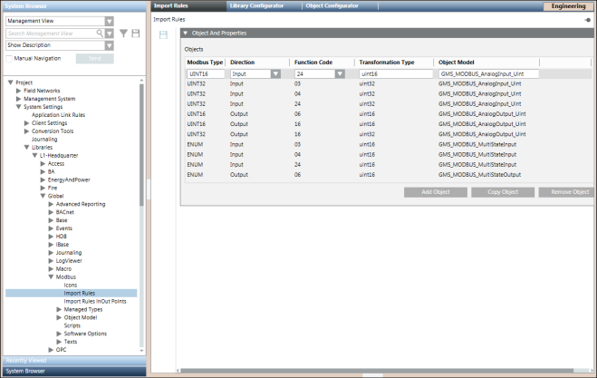
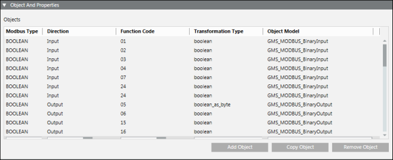
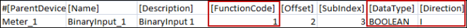

Standard Import Rules
You can configure the rules for importing the object definitions for the objects of a particular Modbus family and the system data type functions associated with those objects from the Import Rules tab. You can access this tab from the Management View by navigating to Project > System Settings > Libraries > L1-Headquarter > Global > Modbus > Import Rules.
Each Import Rules library element contains the rules for a specific product family (such as Modbus and so on).
Using Import Rules, you can define the objects and properties for the import rules using the Objects and Properties expander. You can create another object with Copy Object and delete an object with Remove Object.

Import Rules Toolbar | ||
Icon | Name | Description |
| Save | Save any changes. |

NOTICE

Modifying the Import Rules
Modifying the Import Rules may seriously affect the system's behavior and should always be done by a qualified system librarian. Do not modify any of such rules unless you know exactly what you are doing.
Objects and Properties Expander for Standard Import Rules
The Objects and Properties expander allows you to set the standard Import Rules.
These rules are responsible for mapping the system defined object models to the Modbus data types. They also define the Function Codes applicable to the particular data type and assign the direction of communication for a field point of an object model.
For example, consider the first row in the following screenshot.

Suppose, in the CSV, you specify BOOLEAN as ModbusType, 1 as the Function Code and Input as the Direction. Then while creating the instance, the Importer will create an instance of GMS_MODBUS_BinaryInput and assign Boolean as TransformationType in the address configuration.

Objects and Properties Expander Fields | |
| Description |
ModbusType | Displays the Modbus types (objects) contained in the Modbus CSV file. |
Direction | Displays the directions of the object:Input/Output. |
FunctionCode | Displays the Function code contained in the Modbus CSV file |
TransformationType | Displays the transformation types. Refer to the Table Transformation Types below. |
Object Model | For each Modbus type, you can select or edit a specific object model. |
Add Object | Adds a new import rules entry to the table. |
Copy Object | Copy the selected object to the table. |
Remove Object | Remove the selected object from the table. |
You can change the configuration of existing objects, create new entries, or removed unwanted object entries.

NOTE:
The customization does not impact the standard import rules since the import rules are not copied to a higher priority level. The Importer reads and sets the rules from the headquarter level only.
Transformations from CSV to PVSS | ||||
ModbusType (CSV) | Direction | Function Code | Code Meaning | Transformation Type (PVSS) |
BOOLEAN | Input | 1 | Read Coils | boolean |
BOOLEAN | Input | 2 | Read Discrete Inputs | boolean |
BOOLEAN | Input | 3 | Read Holding Registers | boolean |
BOOLEAN | Input | 4 | Read Input Registers | boolean |
BOOLEAN | Input | 7 | Read Exception Status | boolean |
BOOLEAN | Output | 5 | Write Single Coil | boolean as byte |
BOOLEAN | Output | 6 | Write Single Register | boolean |
BOOLEAN | Output | 15 | Write Multiple Coils | boolean |
BOOLEAN | Output | 16 | Write Multiple Registers | boolean |
INT16 | Input | 3 | Read Holding Registers | Int16 |
INT16 | Input | 4 | Read Input Registers | int16 |
INT32 | Input | 3 | Read Holding Registers | int32 |
INT32 | Input | 4 | Read Input Registers | int32 |
INT32 | Input | 24 | Read FIFO Queue | int32 |
INT64 | Input | 3 | Read Holding Registers | int64 |
INT64 | Input | 4 | Read Input Registers | int64 |
INT64 | Input | 24 | Read FIFO Queue | int64 |
UNIT16 | Input | 3 | Read Holding Registers | uint16 |
UINT16 | Input | 4 | Read Input Registers | uint16 |
UINT32 | Input | 3 | Read Holding Registers | uint32 |
UNIT32 | Input | 4 | Read Input Registers | uint32 |
UNIT32 | Input | 24 | Read FIFO Queue | uint32 |
UINT64 | Input | 3 | Read Holding Registers | uint64 |
UINT64 | Input | 4 | Read Input Registers | uint64 |
UINT64 | Input | 24 | Read FIFO Queue | uint64 |
INT16 | Output | 6 | Write Single Register | int16 |
INT16 | Output | 16 | Write Multiple Register | int16 |
INT32 | Output | 16 | Write Multiple Register | int32 |
INT64 | Output | 16 | Write Multiple Register | int64 |
UNIT16 | Output | 6 | Write Single Register | uint36 |
UNIT16 | Output | 16 | Write Multiple Register | uint16 |
UNIT32 | Output | 16 | Write Multiple Register | uint32 |
UINT64 | Output | 16 | Write Multiple Register | uint64 |
FLOAT32 | Input | 3 | Read Holding Registers | float |
FLOAT32 | Input | 4 | Read Input Registers | float |
FLOAT32 | Output | 16 | Write Multiple Register | float |
FLOAT64 | Input | 3 | Read Holding Registers | double |
FLOAT64 | Input | 4 | Read Input Registers | double |
FLOAT64 | Output | 16 | Write Multiple Register | double |
MOD 10 Size 2 | Input | 3 | Read Multiple Registers | int64 |
MOD 10 Size 3 | Input | 4 | Read Input Registers | int64 |
MOD 10 Size 4 | Output | 16 | Write Multiple Registers | int64 |